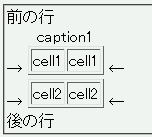
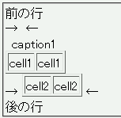

表題（display: table-caption;）を持つインラインテーブル（display: inline-table;）が本来表示されるべき行の下にずれて表示される。
<div style="text-indent:0;">前の行<br> → <table border="1" style="display:inline-table;"> <caption>caption1</caption> <tr><td>cell1</td><td>cell1</td></tr> </table> ←<br> → <table border="1" style="display:inline-table;"> <tr><td>cell2</td><td>cell2</td></tr> </table> ←<br> 後の行</div>
| cell1 | cell1 |
| cell2 | cell2 |
2つのインラインテーブルを置いています。前者は表題がある表、後者は表題がない表です。
Opera7.11での表示
Opera6.06での表示